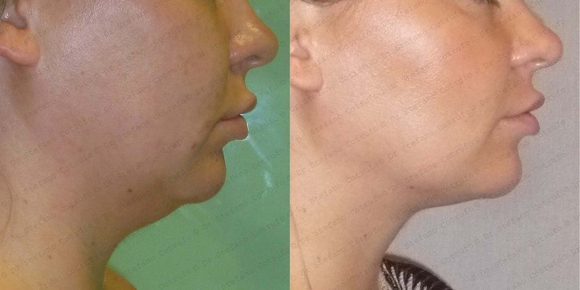

Dr Stefano Cotrufo is a Board Certified Plastic Surgeon with over 15 years’ experience working in London as a cosmetic surgery and reconstructive microsurgery specialist. He performs a wide range of cosmetic surgery and non-surgical procedures from his private practice in Harley Street.
Why choose Dr Stefano Cotrufo as your surgeon?
Dr. Cotrufo is considered to be the best BBL (Brazilian Buttock
Lift) surgeon in the UK.
Based in Harley Street, London.
Buttock lift surgery is an increasingly popular procedure that improves tone and returns definition and contouring to the bottom. The procedure involves transferring a person’s fat from one area of their body to another in order to enhance or augment the buttock.
A buttock lift seeks to correct and restore a more youthful appearance to the bottom, hips and thighs.
Body Surgery
- Breast Surgery
- Arm Surgery
- Stomach Surgery
- Leg Surgery
- Buttock Surgery
- Genital Surgery
- Scars/Moles Surgery
- Post Weight-Loss Surgery
- Male Surgery
Face Surgery
- Eye Surgery
- Nose Surgery
- Ear Surgery
- Cheek Surgery
- Chin & Jaw Surgery
- Face/Neck Lift
- Hair Transplant Surgery
